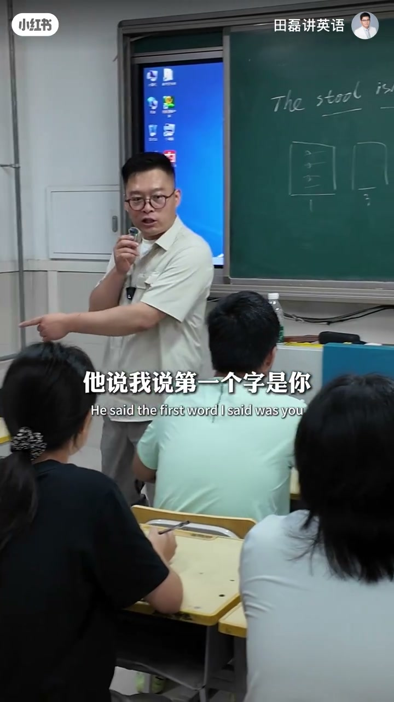
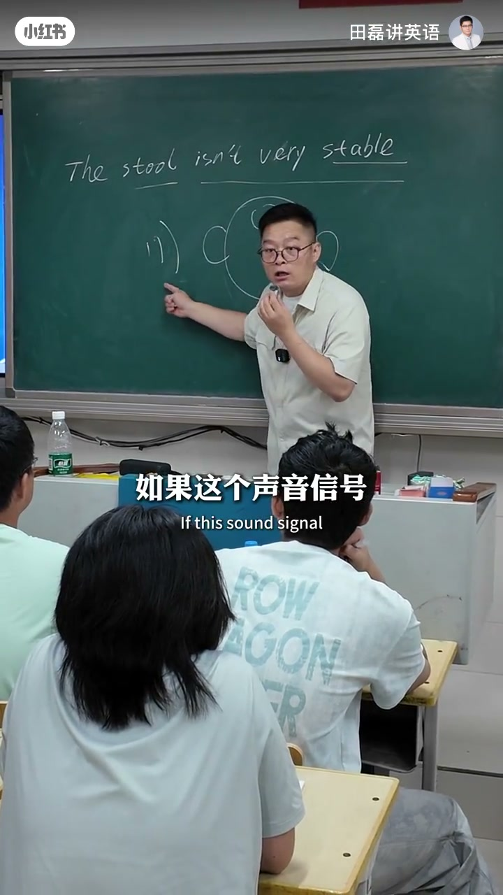
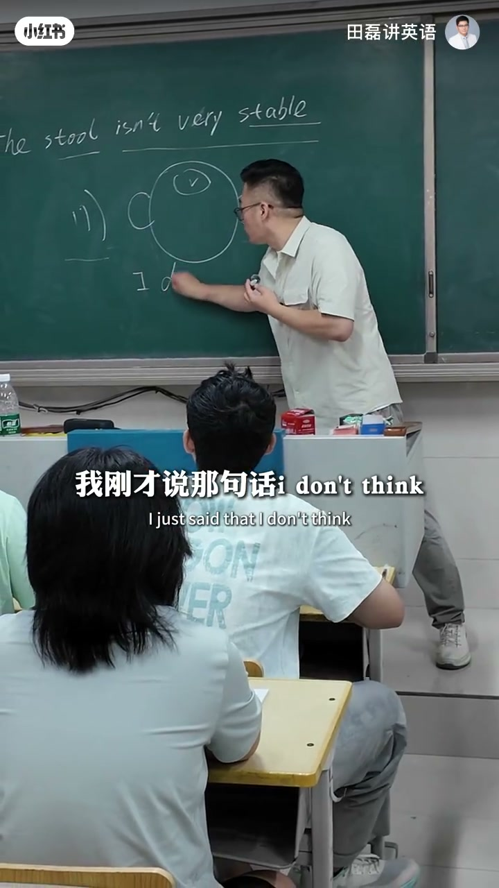
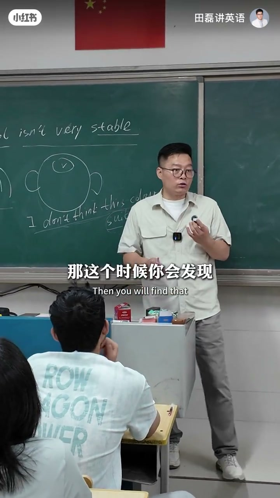
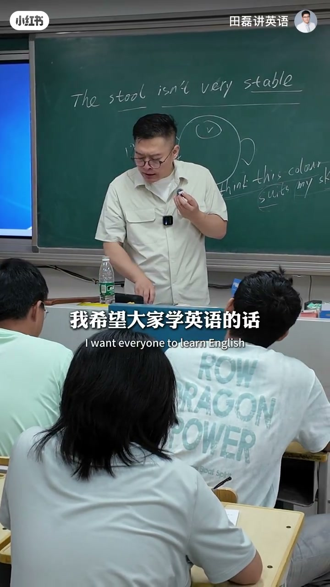
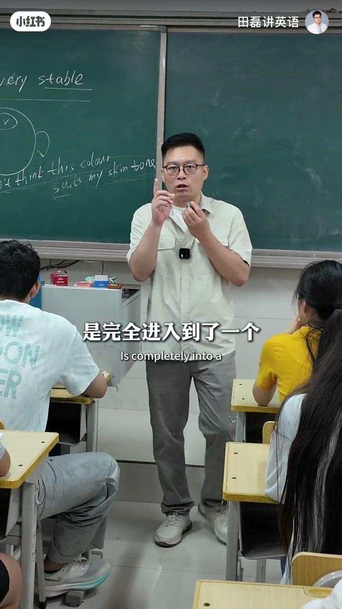

内容要点
「田磊讲英语」用中文听力魔术开场：故意弱化「你」的音，听众却听出「你吃饭了吗」——说明听懂靠大脑语音库匹配，不是猜。英语同理：没存过的声音信号只能懵；听三遍不懂就查文本，把新声音单元刻进脑子。难度选「一眼能读懂」的材料；终极模式是大脑变录音机，而不是天天分析语法的计算机。
知识结构
弱说「你」仍被听出——听懂≠猜，是语音库在补全。
耳朵进模糊信号；库里有就秒懂，没有只能懵（考试听力原型）。
三遍不懂别死磕：查文本（如 suit my skin tone），再听把声音刻进去。
选可读懂难度；Happy birthday 会唱因声音已入库；别把语言学成语法计算机。
听力进步=完善语音库：听得懂难度的材料 + 三遍不懂就查 + 把声音刻进脑子。
00:00-02:20从「你吃饭了吗」看语音库
老师考汉语听力：说「你吃饭了吗」时故意没把「你」说清楚，学员却齐声听出「你」。他追问：想说你但没发出那个音，你们为何听出来？答案不是猜，而是脑袋里有语音库，模糊信号被已有条目补全。
板书画脑袋与耳朵：外来声音若是第一次听到，只能懵——像听力考试里 In this section… 后面一串听成「啵噜噜」。相反 What's your name / how are you 因听过而清晰：库里有「取件码」，模糊件也能对上。


02:20-05:04三遍不懂就查，再刻声音
方法：循环听；三遍仍不懂就别耗时间——不是听力器官坏了，是库里没有这个声音单元。立刻看文本，例：I don't think the color suit my skin tone；卡在 suit my skin tone 时，很多人连 skin tone=肤色、suit=适合都不知道。
查完释义后再听，把该声音单元录刻进脑，为下次听懂做准备。中间约2–4分钟口播分段稀疏，主线仍是「完善语音库」。


05:04-06:14可读懂难度 + 录音机语感
材料难度：选能轻松一遍读懂的文本去听，不要硬上太难。目标是听说读写能运用——把英语声音装进脑中。
用 Happy birthday to you 说明：没背词性语法却会唱，因为学的时候大脑是录音机。母语如此刻入；学外语却常变成计算机分析规则——规则是枷锁，语感要靠声音入库。


完整转录（18段）
以下文本由 Whisper medium 模型自动转录，可能存在少量识别误差，已尽可能修正。
我考你们一下考哈语听力啊听好了啊你吃饭了吗我说他
他说我第一次说的是你他说我说第一次是你你们觉得是吗我第一次说的啥你我第一次说啥你都是你啊
你看你们都说你对不起我没说你我说的是嗯我说我说你吃饭了吗你吃饭了吗
有人说老师你耍赖你本来就想说你对我是想说你但我没说你那你怎么听出你呢告诉我你咋听出你的
但是我没说出那个音来你们却很轻松的听出来呢来现在关键点出来了大家看本质是这样子的这是你这脑袋啊你的撇嘴孩子画的不好看啊
来画圆点啊画圆一点啊每次画画都被笑话说啊来这个可以了吧啊这是我们脑袋好了这是耳朵
听力的本质啊你们按这样方式你就会发出特别快这是耳朵然后呢这是外边有个声音传进来了你吃饭了吗
然后你发现你没有可以猜的你瞬间听懂你吃饭了吗但我没有说你你却听出了原因是什么不是猜的听好了是因为在这个地方我们大脑这个地方有地方叫语音库
如果这个声音你听到我这个声音呢只是个模糊的声音信号如果这个声音信号你是第一次听到那么你就只能猜懵就像你们参加英语听考试的时候那个时候你发现
那个时候你发现我说的什么玩意
In this section you will hear four questions
然后呢后面的啵噜噜噜噜噜噜噜噜噜噜噜噜噜噜噜噜噜噜噜噜噜噜噜噜噜�apat
你听不懂了所以你会发现这个时候如果你听过你What's your name how are you你瞬间听得很清楚为什么呢因为你听过所以说脑子里面就存储过这个声音存储过之后这个时候你外边听的声音再模糊它也相当于我们取快递的快递码
然后再循环一遍再听懂听三遍都没听懂的时候就不要耗时间了因为这个时候不是你的听力有问题是脑子里面声音存储没有存储的一个东西那马上就看一本本哦原来是这个东西I don't think the color suit my skin tone那句话我刚才说的那句话I don't think你会发现当你反复听没听懂的时候当然我嫌弃是假如说这个句子你们懂吗假如你们懂吗我给你们解释一下这句子I don't think你可能听懂这个这个你听懂了然后你也可能听懂了吗This color你听懂了但是突然间suit my skin tone就晕了这个时候你发现你听了三遍没听懂了
这个时候suit my skin tone就不要刻意再反复听了因为脑子里没有声音存储包括现在很多人是skin tone什么意思都不知道对吧这是皮肤色调肤色suit的适应I don't think the color suit my skin tone我不认为这个颜色跟我的肤色搭那这个时候你发现听得出循环听反复听完你听完之后探索探索完之后发现不会了再看答案然后怎么办探完之后skin tone是什么是肤色然后这是适应的意思然后再听把声音录刻进去把声音的skin tone这个声音单元录刻脑中去为下次听懂做准备能明白了吗听你的本质是什么
叫完善云酷写好了叫完善云酷完善云酷同时还有一个什么刚刚说的事把那个能够轻松一遍读懂的那种文本难度的去听不要听太难的这么来行通过这样的方式你会发现你的英语水平进步特别特别快另外我希望大家学英语的话我们把英语要练成真正技能能听说读写运用的那怎么级别什么叫听说读写运用级别就是把英语的声音都装脑中去我给大家举个例子Happy birthday to you咱们都没有背过但咱们却会唱你发现了吗为什么会唱呢你背你没有背你也没有背
没有像以前分析那样Happy是形容词开头了Birthday是名词然后to是件子又是冰格然后分析没有分析过但是你会发现这个你没有分析但你竟然会唱这句话变什么呢其实这是这样子的是我们在学语言的时候学这句话的时候是完全进入到了一个非常正确的高效的模式什么模式呢那就是把我们的大脑变成了录音机你记住学语言高效模式最终一定要进入到录音机状态就是把语言的声音一定要录进去刻落脑中去了那叫语感我们的母语汉语都是
刻入进去的录进去的但是很遗憾的是我们在学语言的时候太多人把它变成了计算机天天ない分析语法规则分析这个分析那个规则是捆绑我们的枷锁